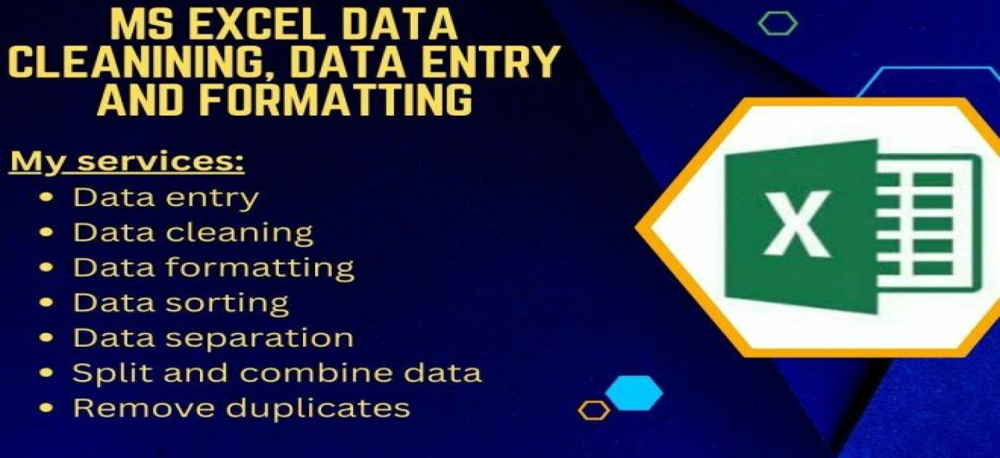
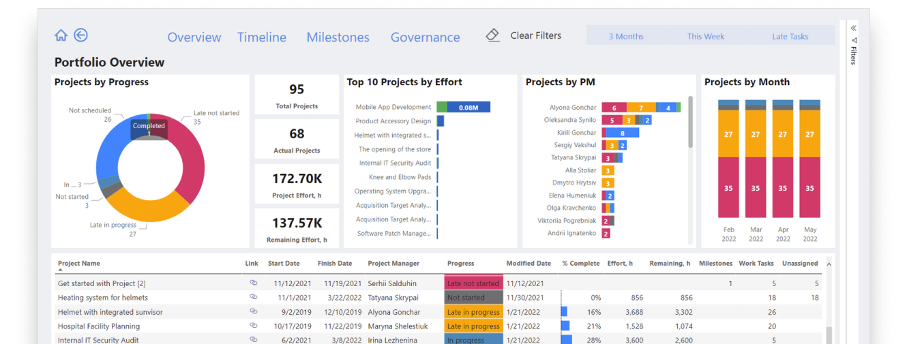

My technical specialty encompasses extensive expertise in both data science and data engineering. As a data scientist, I excel in statistical analysis, machine learning, and predictive modeling to derive actionable insights from complex datasets. As a data engineer, I specialize in designing, building, and maintaining robust ETL data pipelines, ensuring efficient data flow and storage solutions, and optimizing data architecture to support advanced analytics and business intelligence

This portfolio contains all my projects involving data analysis and exploration using Microsoft SQL. The projects showcase various skills, including complex joins, CTEs, temporary tables, window functions, aggregate functions, view creation, and data type conversion. Explore these projects to see practical applications of SQL in data analytics.
This portfolio contains all my projects involving data analysis and exploration using Python. The projects showcase various skills, including data manipulation, visualization, statistical analysis, machine learning, and automation. Explore these projects to see practical applications of Python in data analytics and beyond.

This portfolio contains all my projects involving data analysis and exploration using Excel. The projects showcase various skills, including data visualization, pivot tables, complex formulas, data cleaning, and financial modeling. Explore these projects to see practical applications of Excel in data analytics and beyond.
This portfolio contains all my projects involving data analysis and visualization using Tableau. The projects showcase various skills, including interactive dashboards, data blending, calculated fields, and storytelling with data. Explore these projects to see practical applications of Tableau in transforming data into compelling visual insights.

This portfolio contains all my projects involving data analysis and exploration using MySQL. The projects showcase various skills, including complex joins, CTEs, temporary tables, window functions, aggregate functions, view creation, and data type conversion. Explore these projects to see practical applications of MySQL in data analytics.

This portfolio contains all my projects involving data analysis and visualization using Power BI. The projects showcase various skills, including interactive dashboards, data modeling, DAX calculations, and real-time data analysis. Explore these projects to see practical applications of Power BI in transforming data into actionable insights.